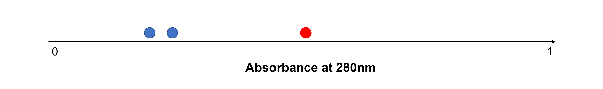
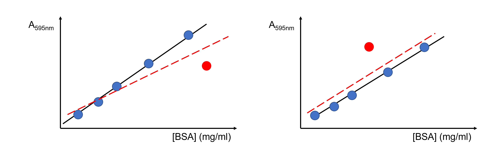
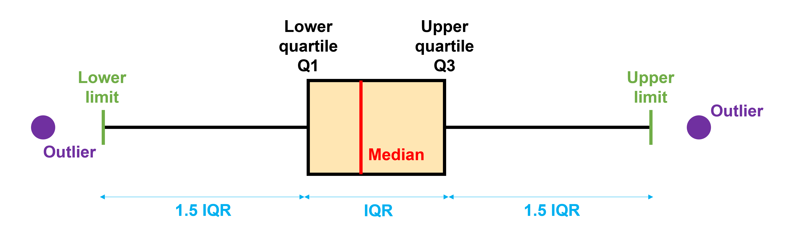

Outliers#
What are outliers?#
In the lab, we often repeat the same measurement (called repeats or replicates) to see how much random variation there is. Sometimes, one of these repeated measurements doesn’t match the others very well. For example, you might measure the absorbance of a protein sample three times to calculate its concentration using Lambert-Beer’s law, but one result looks much higher or lower than the other two.
{kind=link}
Another common problem encountered in the lab are outliers in linear regression. For example, you might measure several (e.g. six) protein standards to create a standard curve for a colorimetric assay. Five of the points may line up nicely to form a straight line or smooth curve, while the sixth point sits far away from the trend.
{kind=link}
Being able to recognize and handle unusual results is an important skill in data analysis. If you suspect an outlier, start by checking for possible mistakes:
Were the values entered correctly in your lab notebook?
Could there be a calculation error, for example in one of the samples used to create a standard curve?
Could one of the data points be a procedural mistake, such as accidentally adding protein to the same well twice and missing another well? Did you see a different volume in some wells?
If no obvious mistake is found, consider whether the unusual result could simply be due to natural variation. One important property of any dataset is how the values are distributed. Most data we measure tend to follow one of a few common distributions, for example normal (Gaussian), student’s t, binomial, Poisson, or chi-squared (χ²). Knowing these distributions helps us estimate the probability of finding values within certain subranges within the span of the data. However, it’s not always easy to tell which distribution best describes a particular dataset, so careful judgement is needed! A data value that is an outlier on the assumption of a certain distribution may or may not be an outlier if the distribution is different.
Does this mean that we can never reject suspected outliers? No, but we need to be very careful! If suspect values are needlessly retained, measurement quality suffers, while if they are wrongly rejected we may be guilty of adjusting the data, perhaps subconsciously, to fit our preconceived idea of what the results should be.
How to detect and handle outliers?#
Significance or statistical tests#
Some significance or statistical tests are designed to detect a single outlier (e.g. the Grubbs test), while others can detect multiple outliers at once (e.g. the generalized Extreme Studentized Deviate (ESD) test).
Masking can occur when too few outliers are specified in the test. For example, if you test for a single outlier when there are actually two or more, the additional outliers can influence the test statistic enough that no points are identified as outliers.
Swamping can occur when too many outliers are specified in the test. For example, if you test for two or more outliers when there is actually only one, the test may declare both points as outliers.
Because of the risk of masking and swamping, it is helpful to visually inspect your data before performing significance tests.
Weighted regression#
Ideally, each condition used to construct a calibration or standard curve should be measured at least three times. If one of these values is suspect, it can then be subjected to a significance test to deterimine if it may be omitted from the data prior to calculating the regression line.
If the point is not omitted, weighted regression will reduce the effect of a single outlier among each set of replicates. Weights can be estimated directly from sample variances.
We discussed weighted fitting in the section “SciPy For Data Fitting” in “Python basics”.
Standardized or studentised residuals#
Detection of outliers based on standardized or studentized residuals is used widespread in linear regression.
Other tools: IQR and robust regression#
Other commonly used tools are the Inter-Quartile Range (IQR) method for large datasets and robust regression for linear and non-linear regression.
Briefly, the IQR method detects outliers by labeling any data point that lies more than 1.5 times the IQR below the first quartile (25 %) or above the third quartile (75 %) as an outlier.
{kind=link}
Robust regression reduces the influence of outliers by e.g.
computing the slope as the median of all slopes between pairs of points (Theil-Sen method for robust linear regression)
giving them less weight during least squares fitting (Huber Loss function for robust linear and non-linear regression)
randomly picking subsets of data, building models on those, and then figuring out which model fits the majority of the data best (random sample consensus (RANSAC) method for linear and nonlinear regression)
…
See sklearn.linear_model.HuberRegressor, sklearn.linear_model.TheilSenRegressor and sklearn.linear_model.RANSACRegressor for code for robust linear regression. See scipy.optimize.least_squares’s option “loss” for robust non-linear regression with Huber Loss.
Robust regression is considerably more technical than the previous methods! We will not go into more detail here. We only include it to make you aware that it exists.